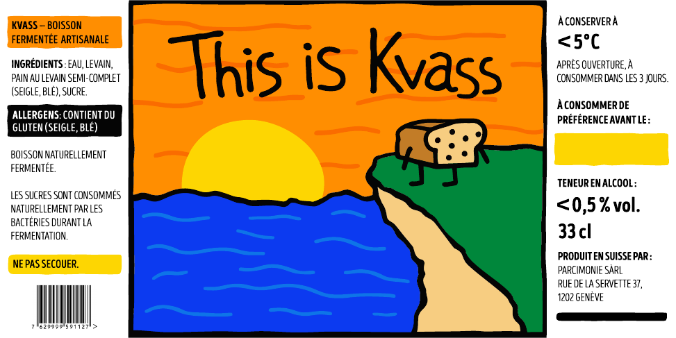
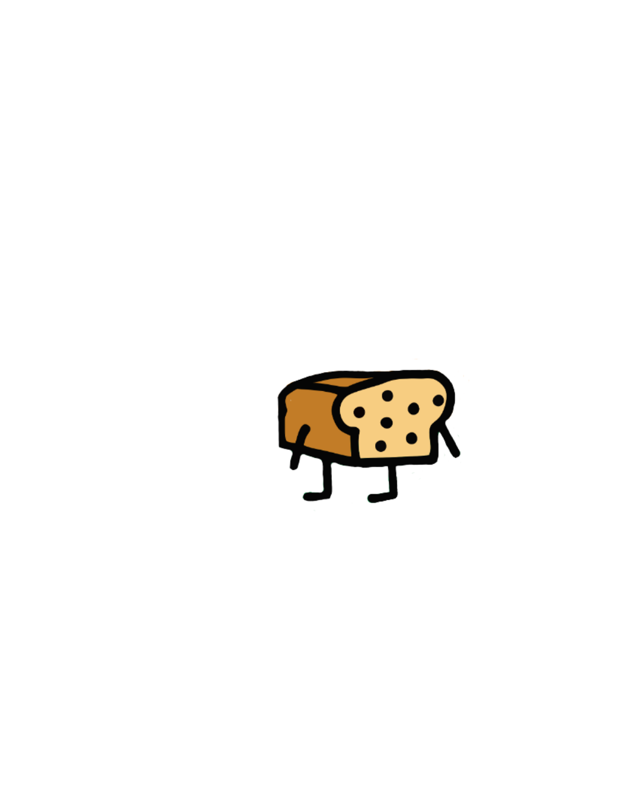

03
Né à Genève.
Une vieille idée, avec une nouvelle énergie.
This is Kvass donne une identité actuelle, colorée et sans prétention à une boisson fermentée traditionnelle.

FERMENTÉ NATURELLEMENT • GENÈVE
Une boisson fermentée à base de pain au levain. Simple, rafraîchissante et pleine de caractère.


01
Le kvass est une boisson fermentée traditionnellement préparée à partir de pain.
Notre version est faite à partir de pain au levain semi-complet contenant du seigle et du blé, d'eau et de sucre.
02
L'IDÉE
Pain.
Eau.
Fermentation.
C'est du kvass.
03
Une vieille idée, avec une nouvelle énergie.
This is Kvass donne une identité actuelle, colorée et sans prétention à une boisson fermentée traditionnelle.

À GARDER AU FROID
< 5°C Après ouverture, consommer dans les 3 jours.04
L'e-mail, Instagram et les points de vente seront ajoutés ici.
hello@example.com